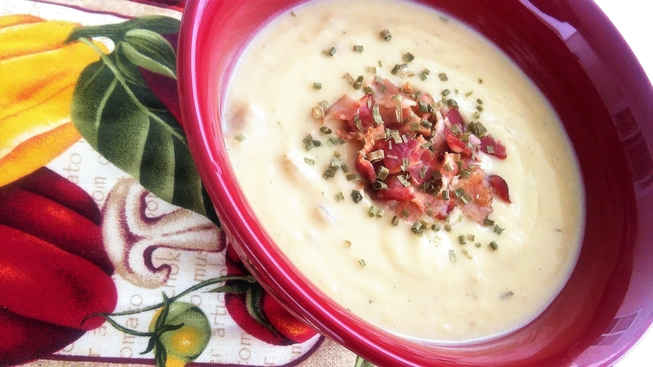

Potato Soup

Description
This recipe is in 'my head', but easy to make. My family loves homemade soups of all type.
Ingredients
- 1 tablespoon butter
- 1 large onion, chopped
- 6 cups mashed cooked potatoes
- 2 (14.5 ounce) cans chicken broth
- 1/2 cup milk
Steps
- In a medium soup pot melt butter over low heat, and saute onions until tender.
- Stir in the mashed potatoes, and then slowly add the chicken broth.
- Stirring, add milk (use more or less to achieve desired creaminess).
- Cook until heated through and season with salt and pepper to taste.